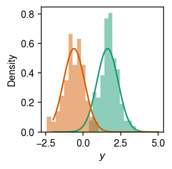
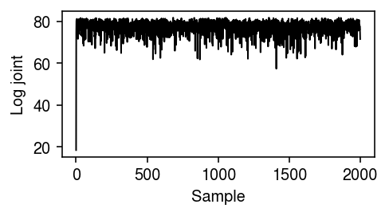
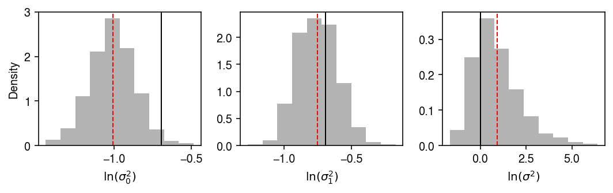
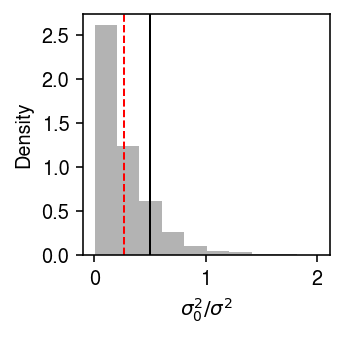

Inter-individual vs. inter-condition variation in gene expression
Table of Contents
Introduction
Suppose we have gene expression data \(x_{ijk}\) in individuals \(i = 1, \ldots, n\), genes \(j = 1, \ldots, p\), and conditions \(k = 1, \ldots, m\). The data are noisy observations of true gene expression in each individual, which in turn are realizations from a population distribution of gene expression values in each condition. To what extent are inter-condition differences in gene expression explained by inter-individual differences? \( \DeclareMathOperator\N{\mathcal{N}} \DeclareMathOperator\IG{\mathcal{IG}} \)
Setup
import numpy as np import scipy.stats as st
%matplotlib inline %config InlineBackend.figure_formats = set(['retina'])
import colorcet import matplotlib.pyplot as plt plt.rcParams['figure.facecolor'] = 'w' plt.rcParams['font.family'] = 'Nimbus Sans'
Method
Suppose \(y_{ijk} = \log_2(x_{ijk} / x_{i+k} + \epsilon)\). Then considering gene \(j\), (Law et al. 2014)
\begin{align} y_{ik} \mid \mu_{ik}, s_{ik}^2 &\sim \N(\mu_{ik}, s_{ik}^2)\\ \mu_{ik} \mid \mu_k, \sigma_k^2 &\sim \N(\mu_k, \sigma_k^2)\\ \mu_k \mid \mu, \sigma^2 &\sim \N(\mu, \sigma^2). \end{align}In this model, the inter-condition variance is given by \(\sigma^2\) and the inter-individual variance (within a condition) is given by \(\sigma_k^2\). We can take an EB-like approach and set \(\mu = \bar{y}\), which is reasonable because the complete data are informative about the global mean. Assuming conjugate priors
\begin{align} \sigma_k^2 &\sim \IG(a_k, b_k)\\ \sigma^2 &\sim \IG(a, b), \end{align}the complete conditionals are analytic
\begin{align} \mu_{ik} \mid \cdot &\sim \N\left(\frac{\sigma_k^2}{s_{ik}^2 + \sigma_k^2} y_{ik} + \frac{s_{ik}^2}{s_{ik}^2 + \sigma_k^2} \mu_{k}, \frac{s_{ik}^2 \sigma_k^2}{s_{ik}^2 + \sigma_k^2} \right)\\ \sigma_{k}^2 \mid \cdot &\sim \IG\left(a_k + \frac{n}{2}, b_k + \frac{1}{2} \sum_i (\mu_{ik} - \mu_k)^2 \right)\\ \mu_k \mid \cdot &\sim \N\left(\frac{\sigma^2}{\sigma_k^2 / n + \sigma^2} \frac{1}{n} \sum_i \mu_{ik} + \frac{\sigma_k^2 / n}{\sigma_k^2 / n + \sigma^2} \mu, \frac{\sigma_k^2 \sigma^2 / n}{\sigma_k^2 / n + \sigma^2} \right)\\ \sigma^2 \mid \cdot &\sim \IG\left(a + \frac{m}{2}, b + \frac{1}{2} \sum_k \mu_{k}^2 \right), \end{align}and we can get posteriors on \(\sigma^2, \sigma_k^2\) by Gibbs sampling.
def est_var(y, s2, ak, bk, a, b, num_samples=1000): assert y.shape == s2.shape n, m = y.shape mu = y_ik.mean() sigma_2 = 1 mu_k = y_ik.mean(axis=0) sigma_k_2 = np.full(m, 1) mu_ik = y_ik samples = [(mu_ik, sigma_k_2, mu_k, sigma_2)] trace = [] for _ in range(num_samples): log_joint = (st.norm(loc=mu_ik, scale=np.sqrt(s2)).logpdf(y).sum() + st.norm(loc=mu_k, scale=np.sqrt(sigma_k_2)).logpdf(mu_ik).sum() + st.norm(scale=np.sqrt(sigma_2)).logpdf(mu_k).sum() + st.invgamma(a=ak + n / 2, scale=bk + .5 * np.square(mu_ik - mu_k).sum(axis=0)).logpdf(sigma_k_2).sum() + st.invgamma(a=a + m / 2, scale=b + .5 * np.square(mu_k - mu).sum()).logpdf(sigma_2)) trace.append(log_joint) # mu_ik = st.norm(loc=sigma_k_2 / (s2 + sigma_k_2) * y + s2 / (s2 + sigma_k_2) * mu_k, scale=np.sqrt((s2 * sigma_k_2) / (s2 + sigma_k_2))).rvs(size=y.shape) sigma_k_2 = st.invgamma(a=ak + n / 2, scale=bk + .5 * np.square(mu_ik - mu_k).sum(axis=0)).rvs(size=m) mu_k = st.norm(loc=sigma_2 / (sigma_k_2 / n + sigma_2) * mu_ik.mean(axis=0) + (sigma_k_2 / n) / (sigma_k_2 / n + sigma_2) * mu, scale=np.sqrt((sigma_k_2 * sigma_2 / n) / (sigma_k_2 / n + sigma_2))).rvs(size=m) sigma_2 = st.invgamma(a=a + m / 2, scale=b + .5 * np.square(mu_k - mu).sum()).rvs(size=1) samples.append((mu_ik, sigma_k_2, mu_k, sigma_2)) return samples, trace
Results
Simplified example
Simulate some data.
np.random.seed(1) m = 2 n = 100 s2 = 1 mu_k = np.random.normal(scale=np.sqrt(s2), size=m) s2_k = np.full(m, .5) mu_ik = np.random.normal(loc=mu_k, scale=np.sqrt(s2_k), size=(n, m)) s2_ik = np.full((n, m), .01) y_ik = np.random.normal(loc=mu_ik, scale=np.sqrt(s2_ik))
Plot the simulated example.
cm = plt.get_cmap('Dark2') plt.clf() plt.gcf().set_size_inches(2.5, 2.5) grid = np.linspace(-2, 5, 1000) for k in range(m): plt.hist(y_ik[:,k], bins=12, density=True, color=cm(k), alpha=0.5) plt.plot(grid, st.norm(loc=mu_k[k], scale=np.sqrt(s2_k[k])).pdf(grid), color=cm(k)) plt.xlabel('$y$') plt.ylabel('Density') plt.tight_layout()

Get posterior samples.
np.random.seed(2) np.seterr('raise') samples, trace = est_var(y_ik, s2_ik, ak=1e-2, bk=1e-2, a=1e-2, b=1e-2, num_samples=2000) samples = samples[-1000:]
Plot the log joint over the samples.
plt.clf() plt.gcf().set_size_inches(3.5, 2) plt.plot(trace, lw=1, c='k') plt.xlabel('Sample') plt.ylabel('Log joint') plt.tight_layout()

Plot the estimated posterior distributions.
plt.clf() fig, ax = plt.subplots(1, 3) fig.set_size_inches(7.5, 2.5) for k in range(m): query = np.log(np.array([s[1][k] for s in samples])) ax[k].hist(query, bins=10, density=True, color='0.7') ax[k].axvline(x=np.log(s2_k[k]), c='k', lw=1) ax[k].axvline(x=query.mean(), c='r', lw=1, ls='--') ax[k].set_xlabel(rf'$\ln(\sigma_{k}^2)$') query = np.log(np.array([s[-1] for s in samples])) ax[2].hist(query, bins=10, density=True, color='0.7') ax[2].set_xlabel(r'$\ln(\sigma^2)$') ax[2].axvline(x=np.log(s2), c='k', lw=1) ax[2].axvline(x=query.mean(), c='r', lw=1, ls='--') ax[0].set_ylabel('Density') fig.tight_layout()

Get the posterior distribution of \(\sigma_k^2 / \sigma^2\).
plt.clf() plt.gcf().set_size_inches(2.5, 2.5) query = np.array([s[1][0] for s in samples]) / np.array([s[-1] for s in samples]).ravel() plt.hist(query, bins=10, density=True, color='0.7') plt.axvline(x=s2_k[0] / s2, lw=1, c='k') plt.axvline(x=query.mean(), lw=1, ls='--', c='r') plt.xlabel(r'$\sigma_0^2 / \sigma^2$') plt.ylabel('Density') plt.tight_layout()
